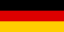

Par mums
Mēs esam vides organizācija. Mūsu pieejas unikalitāte raksturojas ar to, ka mēs atzīstam dziļu saikni starp ekosistēmu veselību un cilvēku kultūru, veselību, drošību un labklājību. Tomēr ir svarīgi atzīmēt, ka, zaudējot saikni ar dabisko vidi, cilvēkiem mūsdienu sabiedrībā, un jo īpaši pilsētu iedzīvotājiem ir grūti saprast, cik lielā mērā esam atkarīgi no ekosistēmām. Tādējādi, mūsu mērķis ir izskaidrot cilvēkiem, kā tieši daba nosaka viņu labsajūtu un kā katrs indivīds var veicināt dabiskās vides saglabāšanu. Mēs uzskatām, ka šī stratēģija ļaus mobilizēt plašu sabiedrību atbalstot reālu darbību vides problēmu novēršanā. Saskaņā ar Tūkstošgades ekosistēmas novērtējumu (Millennium Ecosystem assessment) (2005) un ANO Starpvaldību zinātnes politikas platformas bioloģiskās daudzveidības un ekosistēmu pakalpojumu jomā (Intergovernmental Science-Policy Platform on Biodiversity and Ecosystem Services - IPBES) atzinumiem ekosistēmu globālā degradācija galvenokārt ir saistīta ar cilvēku rīcību, Mēs uzskatām, ka tikai ar plaša sabiedrības iesaistīšanās un kolektīva rīcība varēs uzlabot ekosistēmu veselību.
Mūsu galvenās pētniecības jomas aptver bioloģiskās daudzveidības samazināšanās cēloņu apzināšanu un, jo īpaši, apputeksnētāju pasliktināšanos klimata pārmaiņu kontekstā; saikni starp cilvēku veselību un ekosistēmas integritāti; cilvēka kultūras savstarpējo saistību ar dabisko vidi izpēti, īpašu uzmanību pievēršot Zemes (vides) mākslai un ekotūrismam.
Mūsu komanda sastāv no talantīgiem cilvēkiem, ekspertiem dažādās jomās, ieskaitot dabas aizsardzībaas, videi draudzīgas uzņēmējdarbības vadības, Zemes (vides) mākslas, kultūras mantojuma, vides izglītības, izglītības ilgtspējīgai attīstībai nozarēs.
Mūsu misija
Balstoties uz stabilu zinātnisko datu kopumu un mūsu pašu veiktajiem pētījumiem, mēs pieliksim lielas pūles, lai risinātu galvenās vides problēmas. Izmantojot daudzveidīgas vides komunikācijas metodes, tostarp, publicēšanu, diskusijas un mākslu saskaņā ar UNESCO Ilgtspējīgas attīstības mērķiem, mēs esam ieinteresēti plašai sabiedrībai sniegt zinātniski pierādītus faktus ar mērķi iesaistīt cilvēkus ilgtspējīgas attīstības nodrošināšanā un dabas ekosistēmu saglabāšanā.
Mūsu Vīzija
Mēs ticam, ka cilvēki visā pasaulē, iegūstot skaidru izpratni par saikni starp viņu veselību, drošību, labklājību un kultūru, iesaistīsies dabas aizsardzībā, tādā veidā saglabājot mūsu planētu Zeme no katastrofālām sekām, kas saistītas ar pašreizējo nezināšanu un ignoranci cilvēka darbības izraisītajā ietekmē uz ekosistēmu veselību.
Mūsu partneri
Latvijas Universitāte
Latvijas Lauksaimniecības universitāte
Pollinator Partnership
Free places for you banners!

Mūsu kontakti
NGO “Nature and People”
Reg. NR. 40008268234
e-mail: info.natureandpeople@gmail.com